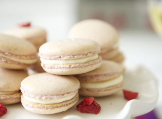

Назад
Домашние макаронс
Блюда стран мира

1 час

15 порций

1 час
15 порций
Ингридиенты:
Миндальная мука - 150 г
Яичные белки - 110 г (55 г + 55 г)*
Сахарная пудра - 300 г (150 г + 150 г)
Пищевой краситель - 3 капли
Вода - 40 мл
Для крема:
Желтки - 2 шт.
Сахара - 100 г
Мука - 4 ст. л.
Молоко - 500 мл
Масло сливочное - 100 г
Ванильный сахар - 1 пакетик
Пошаговый рецепт
- Подготовьте продукты по списку.
- Отмеряйте 150 г сахарной пудры, смешайте ее с 150 г миндальной муки до однородности и просейте. Вылейте сверху 55 г белков и отставьте в сторону.
- Смешайте оставшиеся 150 г сахарной пудры с водой и красителем, поставьте на средний огонь и после первых пузырьков варите 3:40-4 минуты (если у вас есть термометр кухонный, то варите до 118 градусов).
- Тем временем взбейте 55 г белков и тонкой струйкой вливайте сироп (горячий, 118 градусов) в белки, не прекращая взбивать - сначала на большой скорости, а затем включайте маленькую и мешайте до остывания.
- Порциями добавляйте взбитые белки в смесь муки и пудры и перемешивайте лопаткой.
- Когда перемешали до однородности, наполните кондитерский мешочек и отсадите макаруны на пергаментную бумагу (на противне или доске) в шахматном порядке.
- После этого, доской, на которой лежит пергамент с половинками, надо постучать по столу, чтобы вышел воздух и шапочка разгладилась. И оставить макаруны на 40 минут - 1 час (это важно!).
- Выпекайте макаруны на противне 9-11 минут при температуре 170 градусов. На 6 минуте приоткройте духовку, чтобы выпустить лишнюю влагу. Снять макаруны с противня и подобрать половинки друг к другу.
- Готовим крем. Желтки растереть с сахаром и ванильным сахаром, добавить муку, размешать и влить молоко. Заварить до загустения, непрерывно помешивая венчиком. Остудить и снова взбить миксером, добавляя масло.
- Крем наносить на макаруны по кругу с помощью кондитерского рукава.